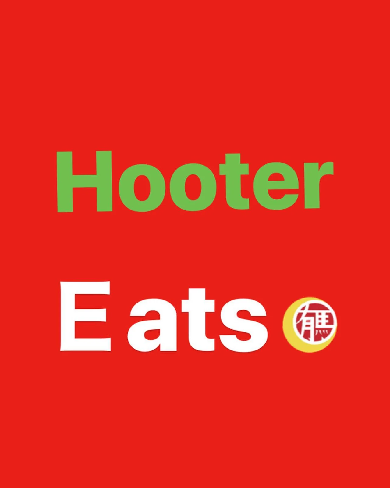
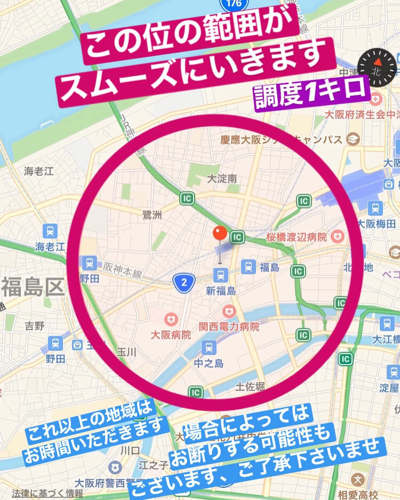
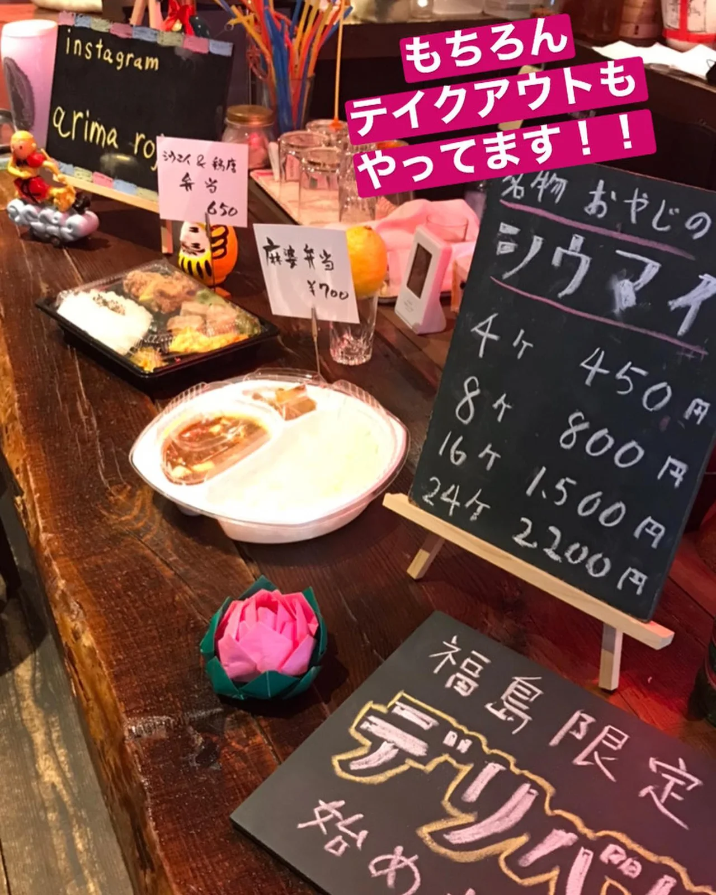
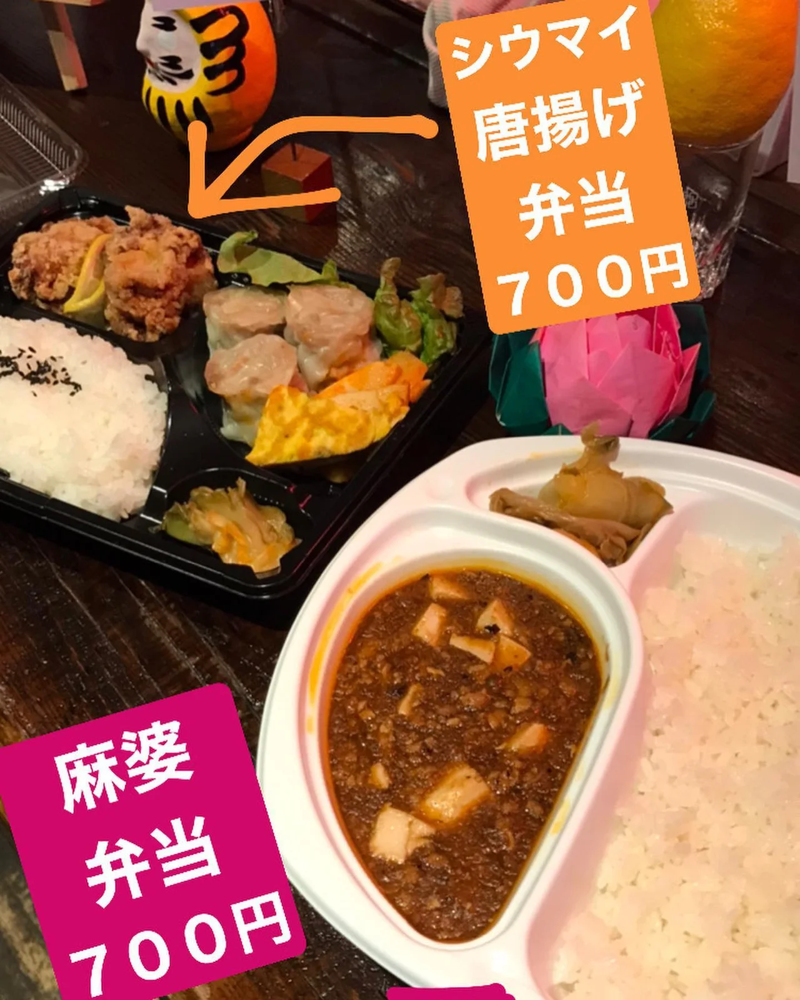
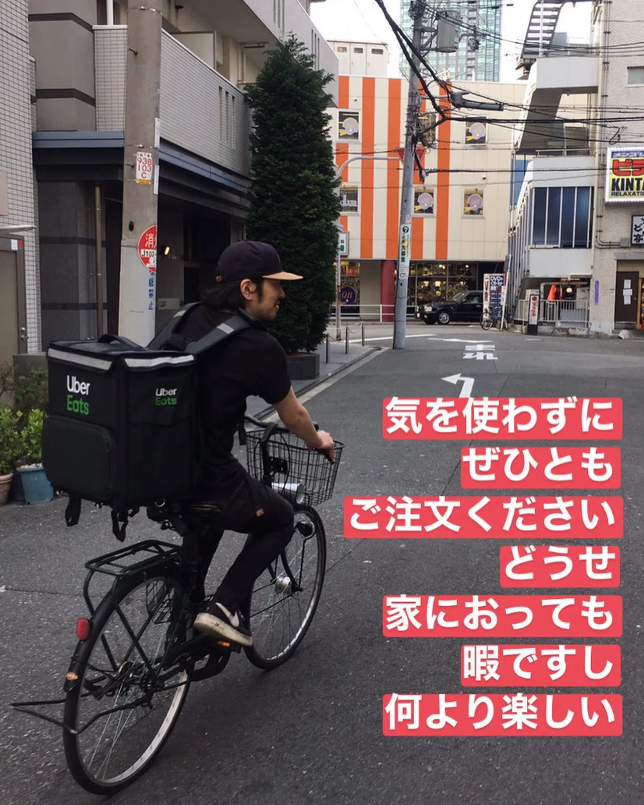
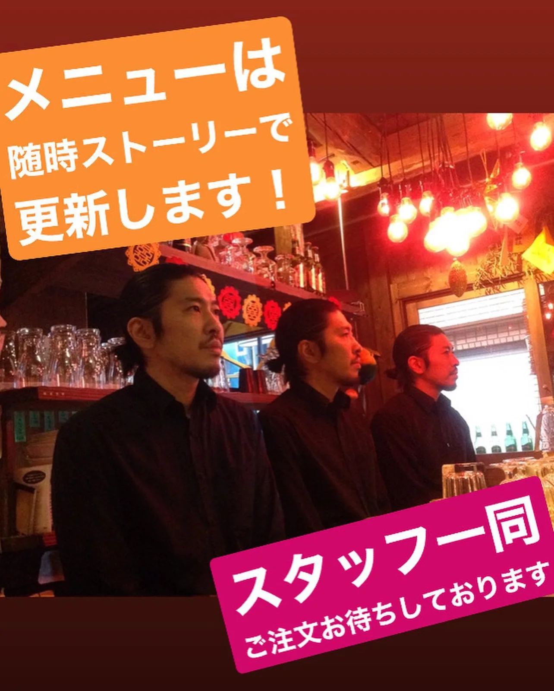

2020年4月9日
さて、テイクアウト&デリバリーをプレオープンしました！






さて、テイクアウト&デリバリーをプレオープンしました！ メニュー画像を投稿していないにもかかわらず、沢山のご注文ありがとうございます！ テイクアウトもデリバリーも楽しい！！！ 皆さんに久しぶりに会えたのも嬉しかったんですが、何より喜んでいただけたのをナマで見れて感動でした。 これやねん！これ！ これがしたくて飲食業に入ってん！ おっさんなって忘れかけてたわ！ 思い出しました！ 明日からも、スタッフのウイルス対策、デリバリーをご注文いただいた方の個人情報漏洩阻止（漏洩したら有馬は閉店します）を徹底して営業していきます！！ おやすみなさい！！ ダイエットになるわ、、、⭐️ #中華バル #中華 #中華料理 #福島グルメ #路地裏 #B級グルメ #中国 #チャイニーズ #路地裏チャイニーズ有馬 #テイクアウト